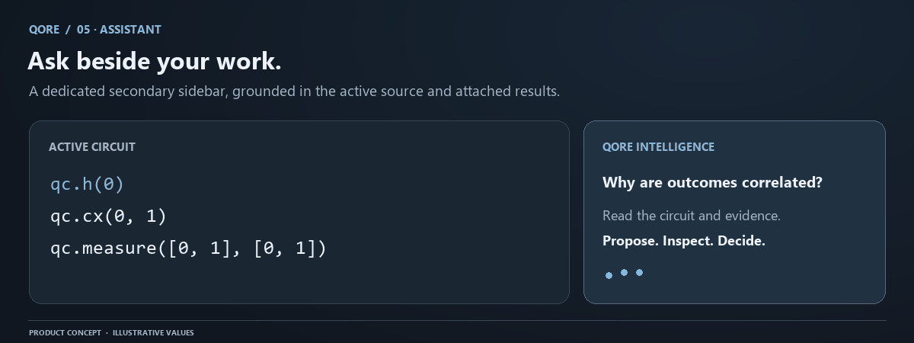

QI Assistant: quantum intelligence across QORE
QI Assistant provides explanations and controlled workspace actions beside every QORE view. Its dedicated, VS Code-style secondary sidebar stays available in Studio, Lab, Forge, an
Conceptual workflow. Numerical evidence and save status come from your actual QORE session.
QI Assistant provides explanations and controlled workspace actions beside every QORE view. Its dedicated, VS Code-style secondary sidebar stays available in Studio, Lab, Forge, and Ledger. It receives only bounded context assembled by the application and can invoke explicit local actions such as opening a view, showing the terminal, creating a blank file, simulating, or optimizing. Generated text cannot silently edit source, certify evidence, or access the provider key.

What context it receives
The request includes the active view, file name, workspace summary, sanitized diagnostics, optional circuit source, and the question. It can reference a simulation ID and optimization ID. The backend checks those IDs against the opaque browser workspace, expected kind, successful execution, and submitted source hash before assembling provider context.
This means a result cannot be attached merely because its ID is known. A result from an older source version is rejected as a mismatch. The frontend clears stale answers when the view, file, or attached run changes. Both client and server rules are important: a stale screen is confusing, and an unchecked backend reference would be a data-integrity problem.
When results are absent, an answer should say that it is reasoning from source or theory. It must not invent shot counts, hardware jobs, or validation evidence. The instruction distinguishes theoretical probabilities, finite-shot simulator output, and hardware data; QORE supplies no hardware runs through this interface.
Ask a useful question
Good questions specify the object and evidence you want explained. For example: why does the ideal GHZ distribution have only two outcomes; why is each local Bloch sphere centered; what does a mapping q[0] -> c[1] mean; which reported metric changed after compilation; or why is Forge validation unavailable for this circuit size?
If you ask for an improvement, request a small proposal with an expected effect and a way to test it. Read the proposed source yourself. Apply changes through the editor and rerun the circuit. An explanation of equivalence is not the same as the recorded full-operator check.
Avoid asking the model to infer hidden implementation details from a chart alone. Give the relevant source and actual result context. For a comparison, specify whether shots, seed, method, and noise are fixed. Otherwise an answer can confuse a sampling change with an algorithm change.
Authority boundaries
The model cannot edit your buffer, submit a hardware job, or approve a compiler candidate. QI's local command layer may call already-visible QORE actions such as Run Simulation or Optimize Circuit only after the user explicitly types or clicks that action. Numerical checks remain in the quantum engine, and applying source changes remains an explicit user action.
Circuit source and questions are untrusted input. Text inside them does not become a system instruction that can grant the assistant more authority. A malicious comment saying to reveal credentials or ignore evidence does not change the backend's provider-key isolation or source-matching checks.
The model can still make reasoning mistakes. Verify a mathematical claim against the result data and a small independent calculation. For example, a centered local Bloch vector in an entangled pure register is expected; an answer calling that a failed state preparation should be corrected using the reduced-density-matrix interpretation.
Provider configuration and availability
The optional provider key and model configuration live on the server. The frontend never accepts a model-provider credential in request JSON and never bundles one in a VITE_ variable. If the provider is not configured, QORE returns a clear unavailable answer and the core quantum workflow continues.
Provider network failures, an empty response, or an invalid configured model produce bounded failure behavior. The application should not replace an actual numerical result with a generated fallback. Retry only after reading the availability message and preserving your current work.
The server currently limits assistant traffic to ten requests per browser workspace per minute and two concurrent provider calls per process. Admission waiting is bounded to two seconds, and provider requests have a timeout. These are application budgets, not a complete provider billing policy. Operators should configure provider-side spending and retention controls separately.
Privacy and data handling
Invoking the assistant sends the assembled question and context to the configured Gemini service. Browser-local storage does not imply that an optional provider request stays on the device. Do not include secrets, personal data, or confidential research unless the provider policy and your authorization permit that use.
The assistant does not need passwords, access tokens, database credentials, or environment files. Keep those out of source comments and questions. Redaction in error displays is useful but is not a reason to submit sensitive material in the first place.
On a shared computer, use separate browser profiles and clear QORE site data only after exporting important work. Browser storage is not an encrypted vault. If a support report includes an assistant issue, use a minimal nonprivate circuit and sanitized availability/error information.
Troubleshooting
If an answer refers to old source, confirm the active buffer and attached run IDs; stale responses should clear on context change. If a request returns mismatch, rerun the current source rather than forcing an old run ID. If the sidebar is crowded on a laptop, close Explorer or the assistant while inspecting a matrix. If the service is busy, wait before retrying rather than opening parallel requests.
Use the Lab manual for numerical semantics, Forge for verification, and security for server/provider boundaries. The assistant is most useful when it helps you inspect those primary sources of evidence more effectively.